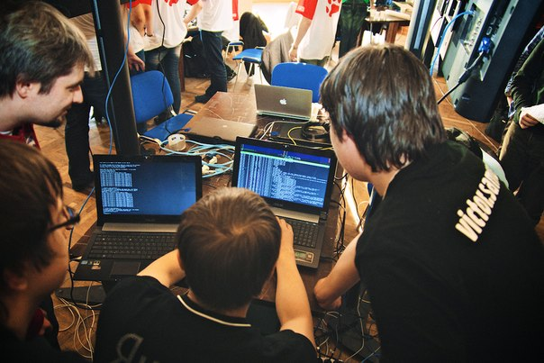

<div class="container">
  <div class="row">
<p><h4>InnoCTF 2016</h4></p>
    <p><b>InnoCTF 2016</b> - это соревнования среди студентов университета Иннополис и приглашённых команд Республики Татарстан в области информационной безопасности (CTF).</p>
<p>
	<ul>
		<li>Название: InnoCTF 2016 - командные соревнования по компьютерной безопасности в формате CTF среди студентов Республики Татарстан</li>
		<li>Дата закрытия регистрации: 10.11.2016</li>
		<li>Дата проведения соревнований: 20.11.2016</li>
		<li>Место проведения: город Иннополис, Республика Татарстан</li>
		<li>Формат: task-based</li>
		<li>Количество человек в команде: до 5</li>
		<li>Организаторы: команда Espacio</li>
	</ul>
</p>
<p>также после окончания соревнований будет проведен разбор заданий местной командой организаторов.</p> 
<p> </p>
<p><h4>What is CTF?</h4></p>
<p><b>CTF (Capture the flag)</b> – это командная игра, главной целью которой является захват «флага» у соперника. Формат Сapture the flag может использоваться и в пейнтболе, и среди ролевиков, и в компьютерных играх. В области компьютерной безопасности тоже есть своё понятие CTF. Командные соревнования по информационной безопасности формата CTF – это как раз то, что стало причиной появления тысяч команд со всего мира и то, ради чего создана эта лента.</p>



<p>Соревнования формата CTF могут проходить удалённо (в сети) и очно. В первом случае команды соревнуются через интернет, находясь в разных точках мира. Такие соревнования чаще всего длятся больше суток в формате нон-стоп. На очных соревнованиях команды собираются в одном месте каждая за своим столом. Такие соревнования длятся семь – восемь часов. Часто практикуется совмещение форматов: например, отборочные этапы на некоторые СTF-соревнования проходят в сети, а финал – очно в городе организаторов соревнований. Победа в отборочном туре онлайн даёт команде право участвовать на очном этапе соревнований.</p>

<p>Есть несколько вариантов проведения соревнований по компьютерной безопасности. Во-первых, это формат <b>task-based</b> (или <b>jeopardy</b>) – когда игрокам предоставляется набор тасков (заданий), к которым требуется найти ответ и отправить его. Ответ представляет собой флаг: это может быть набор символов или произвольная фраза. За верно выполненное задание команда получает определенное количество очков. Чем задание сложнее, тем больше очков будет полагаться за правильный ответ. Все задания в CTF-соревнованиях формата task-based можно разделить на несколько категорий: например, это задачи на администрирование, криптографию и стеганографию, задачи на нахождение веб-уязвимостей и любимые многими задания категории joy – развлекательные задачи разнообразной тематики. Одно из любимых сегодня заданий категории joy – сделать коллективное селфи. И это с большим успехом выполняется на многих соревнованиях СTF!</p>

<p>Второй вариант проведения CTF-соревнования – формат <b>classic</b>. В классической схеме каждая команда получает выделенный сервер или небольшую сеть для поддержания её функционирования и защиты. Во время игры команды получают очки за корректную работу сервисов своего сервера и за украденную информацию (она же – «флаги») с серверов соперников.</p>

  </div>
</div>
